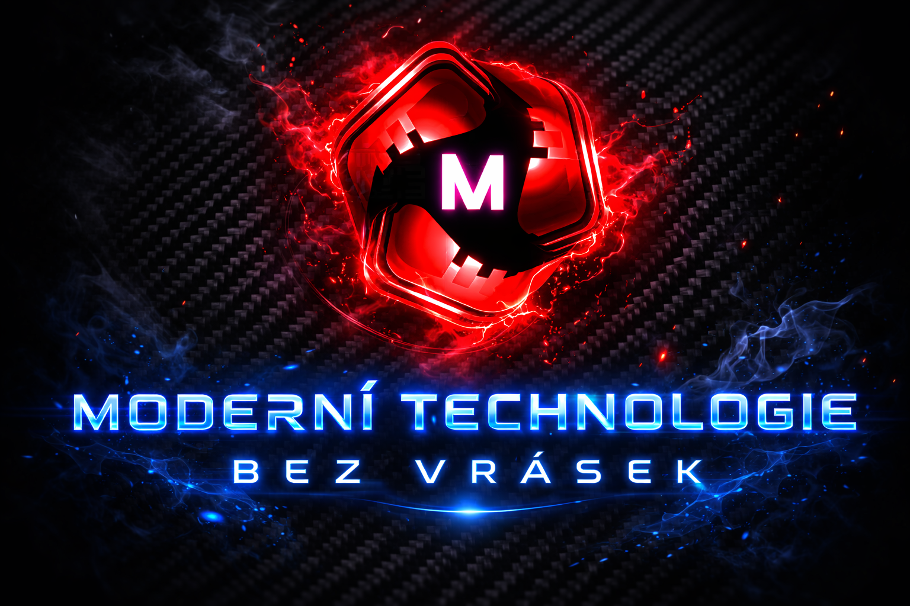

Vítejte ve světě moderních technologií
Vyberte si oblast, která vás zajímá. Ať už jde o plynulou jízdu nebo bezproblémové IT.
E-Mobility
Oprava a servis elektro koloběžek a kol
Profesionální péče o vaše elektrická vozítka. Od diagnostiky a oprav baterií až po mechanický servis a údržbu.
Vstoupit
IT Služby
Technologie bez vrásek
Komplexní IT podpora pro jednotlivce, živnostníky a malé firmy. Lidský přístup a řešení na míru.
Vstoupit